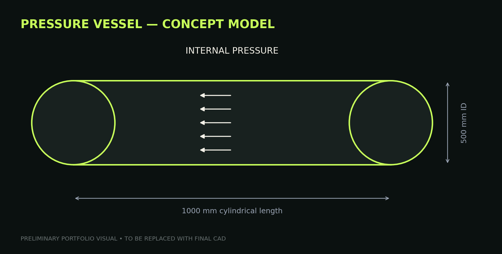
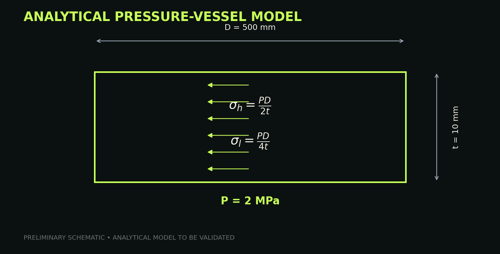
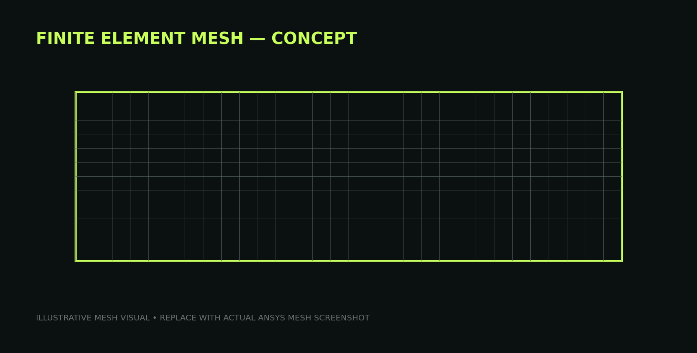
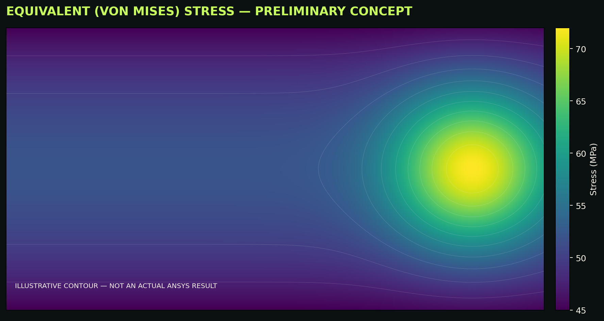
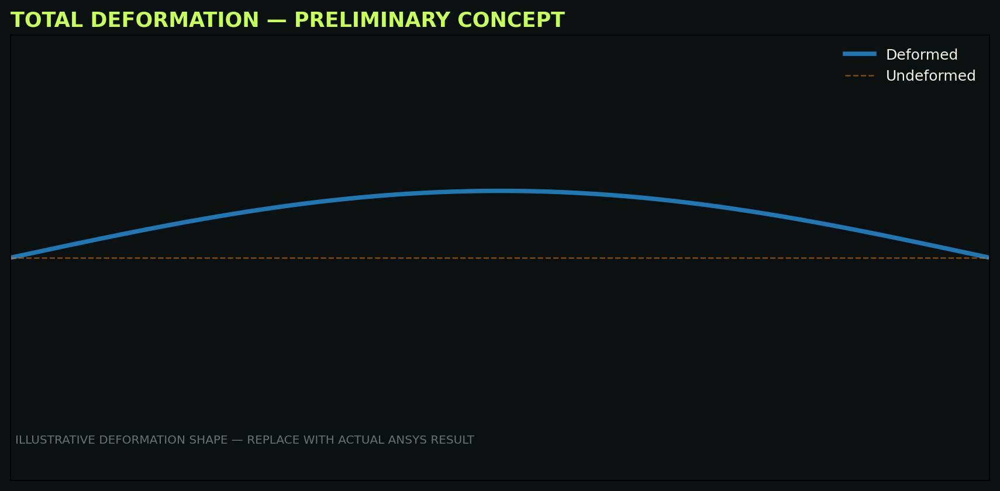
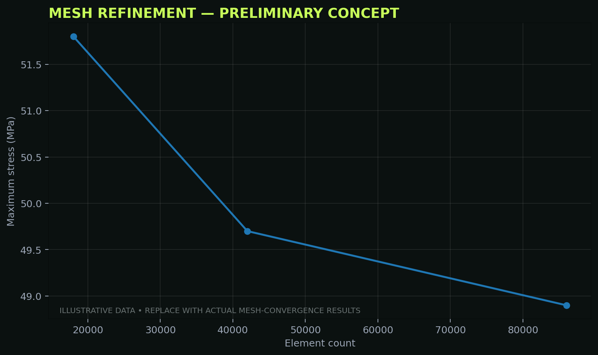

MECHANICAL DESIGN / FEA
PRESSURE VESSEL
DESIGN & FEA
VALIDATION
A mechanical design and simulation study focused on analytical pressure-vessel calculations, 3D CAD development and static structural FEA validation using SolidWorks and ANSYS Workbench.
01 / DESIGN PARAMETERS
THE DESIGN
The preliminary design uses a cylindrical pressure vessel with hemispherical end heads. The selected geometry provides a compact model suitable for analytical stress calculations and subsequent static structural validation.
02 / CAD DEVELOPMENT
3D MODEL
The vessel geometry is intended to be developed as a parametric SolidWorks model, with the shell thickness and principal dimensions controlled by the design requirements.

03 / ANALYTICAL ANALYSIS
STRESS CHECK
For a thin-walled cylindrical section, the preliminary hoop and longitudinal stresses are estimated using the standard pressure-vessel relations below.

Preliminary design values shown here are working assumptions for the portfolio build. They should be replaced by the final calculated values after the complete engineering analysis is performed.
04 / FEA SETUP
STRUCTURAL VALIDATION
The intended ANSYS Workbench workflow is a static structural study with the vessel material assigned, appropriate constraints applied, internal pressure defined as the loading condition, and the mesh refined until the stress result shows acceptable convergence.

05 / FEA RESULTS
RESULTS


The result visuals in this initial website version are illustrative portfolio placeholders, not completed ANSYS output. Replace them with screenshots from the actual simulation before describing the values as final FEA results.
06 / MESH REFINEMENT
CONVERGENCE
A mesh-refinement study will compare maximum stress across progressively finer meshes. The final portfolio version should use the actual element counts and converged results from ANSYS.

07 / VALIDATION
ANALYTICAL vs FEA
| RESULT | ANALYTICAL | FEA | STATUS |
|---|---|---|---|
| Hoop / critical stress | 50 MPa | To be validated | Pending ANSYS |
| Longitudinal stress | 25 MPa | To be validated | Pending ANSYS |
| Deformation | — | To be calculated | Pending ANSYS |
| Factor of safety | 5.0* | To be validated | Pending ANSYS |
*Based on the preliminary 250 MPa yield-strength assumption and 50 MPa hoop-stress estimate. Final FoS should be recalculated using the selected material and actual governing FEA result.
08 / PROJECT STATUS
ONGOING
The portfolio page is structured around the intended engineering workflow. Final SolidWorks and ANSYS screenshots, mesh statistics and validated numerical results will replace the preliminary visuals as the analysis work is completed.